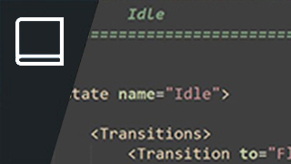
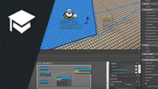

AI Обзор
В этом обзоре представлены самые разные темы: от того, как ведет себя AI, до того, как он опрашивает местность, чтобы понять мир против игрока. Система AI — очень сложная тема, охватывающая как старые системы, такие как TPS, расположенные только в коде GameSDK, так и новую UQS, которая входит в стандартную комплектацию движка как модульная система. Перейдите к этому разделу, чтобы понять структуру верхнего и нижнего уровня реализации CRYENGINE AI.
Рисунок: Настройка исключения Navmesh
AI Ссылка
Обычно система AI использует несколько других универсальных интерфейсов для создания внешнего вида и движений персонажа. По этой причине ниже мы связали несколько инструментов, которые должны облегчить вам использование. Это будет варьироваться от самих вложений до движения, которое осуществляется с помощью Mannequin или редактора смарт-объектов.

Рис.: GameSDK Дерево поведения
AI Учебники
AI, описанный в разделе учебных пособий, охватывает простое рисование навигационных сеток для поиска пути и достаточно сложный, чтобы показать, как запрашивать закрывающие поверхности. Другие показанные системы охватывают навигацию вне сети посредством реализации смарт-объектов. Это особенно полезно, если вы хотите, чтобы ваш игрок подвергался риску нападения сзади из-за того, что AI может пересекать местность.
